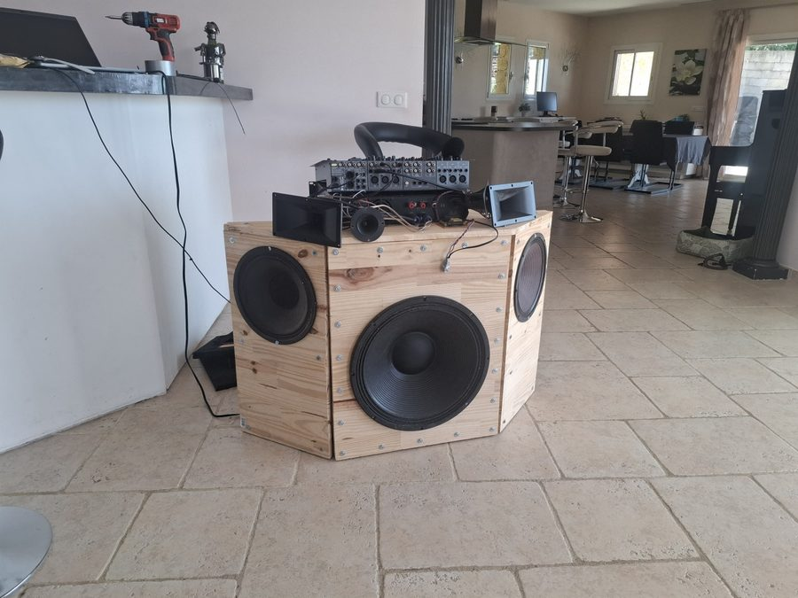
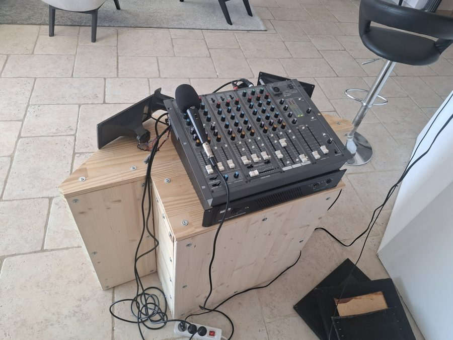

allure ATTENDUE · modèle d'un 18″ de sono en bass-reflex · ce n'est pas encore une mesure
l'impédance Z(f) du caisson et des médiums
un modèle physique du haut-parleur (problème inverse)
les valeurs de L et C sous contraintes (coût, pertes, ampli)
selfs, banc électrique, micro et wattmètre
la première expérience fournit les données ; les dernières disent si le calcul avait raison
carte son + logiciel REW, recoupée au GBF et à l'oscilloscope
→ fournit la charge réelle sur laquelle tout est calculé
inductance, résistance du fil, échauffement
→ relie les pertes à la masse de cuivre
filtre catalogue et filtre optimisé, branchés sur les vrais haut-parleurs
→ confronte la prédiction du calcul au réel
somme acoustique des deux voies, consommation de chaque solution
→ juge le résultat sur ce qu'on entend et ce qu'on consomme
résistance retrouvée à ±3 %, condensateur sur sa droite de 10 Hz à 1 kHz ; sinon, je cherche l'erreur. Et je vérifie la carte son jusqu'à 10 Hz, en dessous de sa plage garantie.
je mesure le caisson et le bloc médiums tel qu'il est câblé, et je confronte la courbe à ma prédiction de l'accord des évents, calculée d'après leurs cotes.
chaîne de calcul déjà écrite et testée sur des données fictives, avec l'aide d'une IA (Claude), ce que je déclare · j'en réécrirai seul le noyau
pas de saturation : la valeur ne dépend pas du volume
moins de résistance de fil, c'est beaucoup plus de cuivre : \( m \propto (L/r)^{3/2} \)
inductance, résistance du fil, échauffement au niveau fort
la même bobine sert au filtre catalogue et au filtre optimisé
à 100 Hz, λ = 3,4 m : la pièce domine, d'où le champ proche · deux niveaux d'écoute fixés à l'avance · wattmètre : consommation de chaque solution
critères, niveaux d'écoute et cible sont datés dans un registre avant la première mesure comparative
on n'avance que si l'étape passe : étalons retrouvés, puis filtre catalogue retrouvé sur 8 Ω
jamais sous l'accord des évents à fort niveau (la membrane n'y est plus retenue) ; 48 V coupé sur le banc d'impédance
annexes : matériel · risques et parades · critères de comparaison
| Origine | Matériel |
|---|---|
| J'ai déjà | l'enceinte (construite) · ampli t.amp E-800, deux canaux · pré-ampli à deux sorties · carte son Focusrite Scarlett Solo · micro de mesure XLR · wattmètre de prise · logiciels REW, LTspice, Python |
| Le lycée prête | GBF · oscilloscope · multimètre · résistance de puissance 8 Ω · résistance de ballast 10 Ω |
| J'achète maintenant | résistances de précision (100 Ω à 0,1 %, 33 Ω, 10 Ω) · condensateurs étalons · fiches XLR et jack · cordons et pinces |
| J'achète ensuite | fil de cuivre émaillé pour deux selfs · condensateurs du filtre · composants du filtre actif (ALI, alimentation ±15 V) |
| Risque | Parade prévue |
|---|---|
| la chaîne de mesure ne retrouve pas les étalons | porte d'étalonnage : diagnostic avant tout ; deuxième chaîne indépendante (GBF + oscilloscope) |
| la carte son n'est pas garantie sous 20 Hz | vérification sur une résistance connue jusqu'à 10 Hz ; le GBF descend plus bas |
| la pièce fausse la mesure acoustique à 100 Hz | champ proche : membrane et deux évents, sommés |
| le bobinage prend plus de temps que prévu | deux selfs à prise au lieu de quatre ; fil commandé avant mi-décembre |
| le 18″ est endommagé par une excursion excessive | jamais sous l'accord des évents au niveau fort ; contrôle visuel avant chaque balayage |
| le filtre optimisé ne bat pas le catalogue | critères datés avant : la conclusion sera écrite quelle qu'elle soit — un résultat négatif reste un résultat |
| retard général | le bilan énergétique est le premier élément sacrifiable (une seule mesure) |
| Critère | Ce qu'il mesure | Avec quoi |
|---|---|---|
| Fidélité du raccord | écart de la somme des deux voies à la cible visée | micro, champ proche |
| Précision du raccord | fréquence où les deux voies se croisent, comparée à 100 Hz | banc électrique, micro |
| Pertes d'insertion | puissance perdue dans le filtre | tension et courant, résistance du fil |
| Consommation au repos | ce que consomme la chaîne sans signal | wattmètre de prise |
| Coût marginal | prix des composants ajoutés | calcul sur factures |
| Coût système | prix du système complet équivalent | devis |
| Matière | masse de cuivre, encombrement | calcul, balance, mètre |
| Robustesse | dérive entre niveau faible et niveau fort | mesures aux deux niveaux |